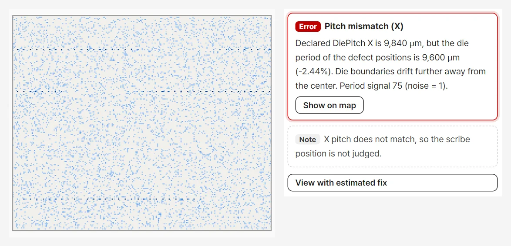
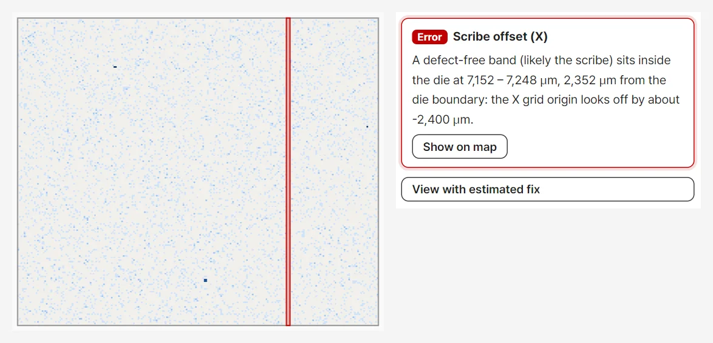

When a defect map is plausibly wrong
What the problem is
KLARF writes each defect position as a die number (XINDEX, YINDEX) and a position inside the die (XREL, YREL). The position on the wafer is computed from these with DiePitch and the wafer center location. If the inspection tool wrote these values with a wrong map definition, the file is still consistent with itself. So a viewer draws the map without any error, and the defects land on the wrong dies.
When I built recipes and maps, I checked the map definition before looking at any defects. Klarf Wafer Map Viewer does the same from the defect file side. Every time a file opens, it compares five things against the defect layout: pitch, scribe (grid origin), origin die, defects outside the wafer, and die index. This note covers pitch and scribe. The code is in src/check.js.
Pitch: find the die period from the defect positions
Even if the tool split positions into die numbers and relative positions with a wrong pitch, joining them back with the same pitch (die number × pitch + relative position) returns the position the tool measured. Those positions keep structure that repeats in every die: repeating defects at the same spot in each die, and the empty band of the scribe that is not inspected. Their period is the real die period, whatever the declared value says.
The app bins the defect X positions into cells pitch/32 wide, and for each of 201 candidate periods within ±5% of the declared pitch it averages the strength of the 1st to 8th harmonics. Random positions give a strength of about 1; repeating structure makes it rise at the real period. The best candidate, refined with a parabola, is the measured period.
// From src/check.js, with the default rule values written as numbers
const per = period(ax ? W.y : W.x, n, p, g.R); // measured period q, signal strength z (noise = 1)
const dev = ((per.q - p) / p) * 100;
const pitchBad = per.z >= 8 && Math.abs(dev) > 1.0; // only with enough signal; error if off by more than 1%
Scribe: is the defect-free band on the die boundary?
The scribe is not inspected, so it has no defects. If the map definition is right, this empty band must sit across the die boundary (0 = pitch) in the relative positions. The app splits XREL into 400 cells and finds the longest run of cells with fewer than 15% of the mean count. If an edge of the band is more than 2% of the pitch away from the boundary, it is an error, and the band center gives the estimated origin offset.

Guards against false alarms
- If the period signal is weaker than 8, the app does not judge and writes a note instead. On structureless random positions (8,000 points, 5 seeds) the strength is 1.4–2.4 and the "period" found falls anywhere from 9,267 to 10,080 µm. Without this floor, that would become a pitch error.
- With fewer than 2,000 defects, pitch and scribe are not judged. The scribe check looks only at empty bands, because repeating defects also make dense bands. A band wider than 20% of the pitch, or one where fewer than 30 defects would be expected, may be empty by chance, so it is skipped.
- Symptoms explained by a cause are not counted separately. If the pitch is wrong, the scribe is not judged, and defects outside the wafer are counted after correcting the origin die and the index. One error should not be reported as several.
Result
On five synthetic files with one map error each, all five were found, and each file reported only the error that was put in. On 24 normal synthetic wafers (4 samples, 20 other seeds) there were 0 false alarms. On those normal wafers the weakest period signal was 44 and the largest difference from the declared pitch was 0.03%, far from the limits. Re-checking the map with the estimated fix gives 0 errors for pitch, scribe, origin and index; defects outside the wafer remain, because they are real defects. You can check this with node --test in the repository. The limits were tuned on synthetic data only, and real files with weaker repeating structure may need them tuned again.
Takeaway
A file being consistent with itself is not the same as its map definition being right. The defect layout itself carries the die period and the scribe position, so it is independent evidence to compare against the declared map definition. Before interpreting a distribution, check the coordinate system it was drawn in, and when there is not enough signal to judge, say it was not judged instead of raising an error.
The figures and numbers come from data made by the app's synthetic KLARF generator (src/gen.js). They are not real tool or product files.